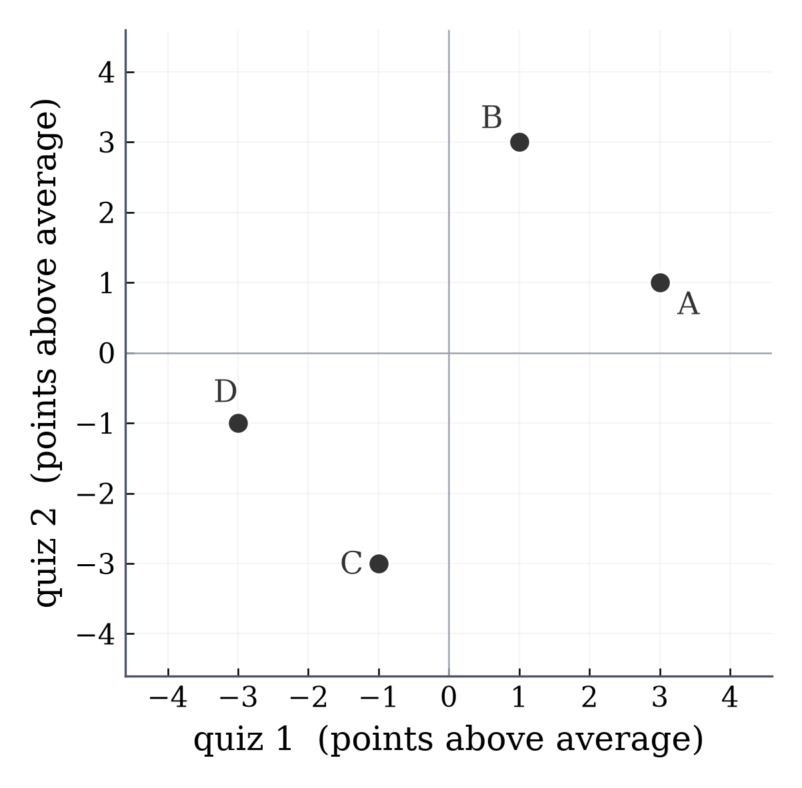
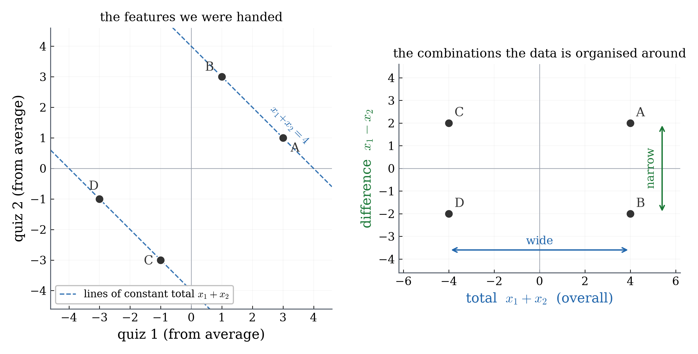
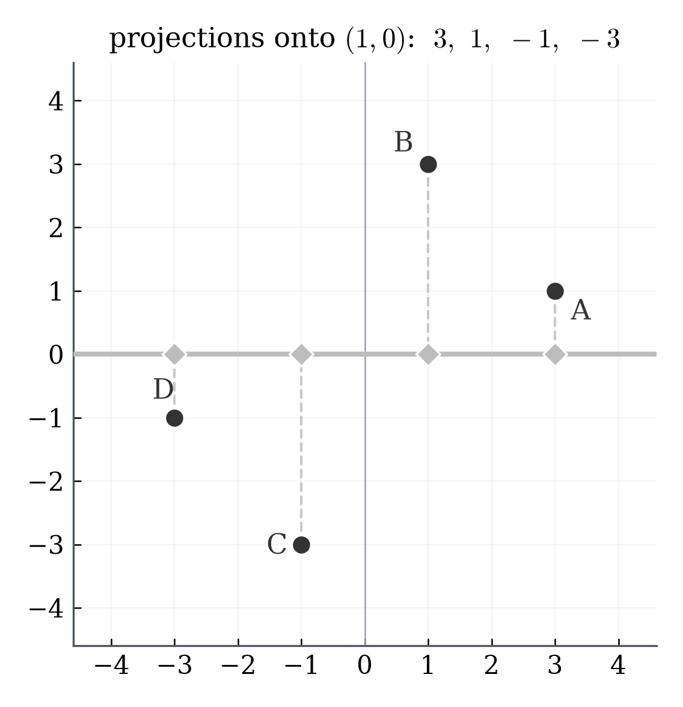
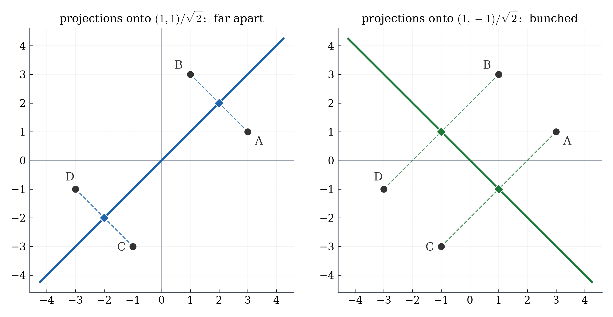
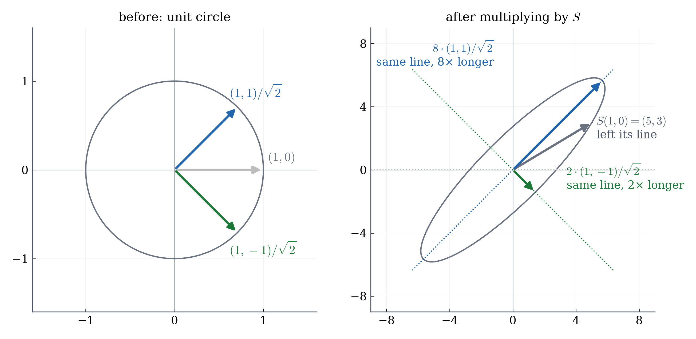
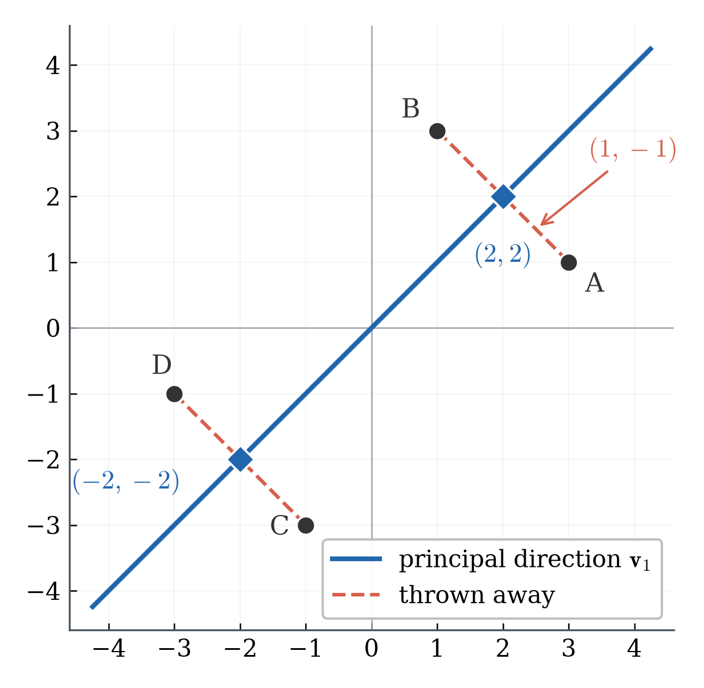

Jie Zhong Department of Mathematics California State University, Los Angeles
Unit map: the columns you were handed are only one description
Spotify records a play count per song, a photo a brightness per pixel. Tens of thousands of numbers — but neighbouring pixels are nearly equal, and people who play one song play similar songs. The numbers move together.
So the features in a dataset are just the quantities somebody chose to record: one possible set of coordinates, not the only one. Combinations of them may describe the same data far better.
We have already met this and could not finish it. In L06 two columns of \(X\) were near-copies, \(X^\top X=\begin{bmatrix}2&2.001\\2.001&2.002001\end{bmatrix}\) and \(\det=10^{-6}\): the determinant said something is redundant, but not which combination of the columns it is.
So: can we find better axes for the same data — automatically, when there is nothing to look at — and how much do we lose if we keep only the best of them?
L07: find the axes. L08: rank them, keep the strong ones, count the cost. We come back to that \(10^{-6}\) at the end of L08.
What this unit should answer
Question
What we build to answer it
Lecture
What does it even mean to describe the same data with different features?
a direction is a new feature; projection gives its values
L07
What makes one new feature better than another?
the variance along it, from one formula
L07
Can the data hand us its own axes, with no guessing?
one equation that the good axes satisfy
L07
Why do those axes form a coordinate system at all?
the one property every data matrix has
L07
Which axes should we keep — and is that provably the best choice?
a maximization we can solve exactly
L08
What does dropping the rest cost, and why was L06's matrix nearly singular?
an exact accounting, in those same numbers
L08
One example runs through the whole unit: four students and their scores on two quizzes. Every number in L07 and L08 comes from those eight scores.
L07 — Finding the Directions a Dataset Is Built Around

Four students, two quizzes (out of 10):
A
B
C
D
average
quiz 1
10
8
6
4
7
quiz 2
8
10
4
6
7
Measure each score from the class average (subtract 7), so the numbers describe how the students differ from one another rather than how far the class sits from zero:
Two questions any instructor would ask about these four: (1) who did best overall? (2) who did relatively better on quiz 1 than on quiz 2?
Neither column answers either question. \(\text{quiz 1}+\text{quiz 2}\) answers the first — A and B tie at \(4\), C and D at \(-4\). \(\text{quiz 1}-\text{quiz 2}\) answers the second — A and C give \(+2\), B and D give \(-2\). The questions we care about are about combinations of the columns, not the columns.
Two combinations the data is built around

A \((3,1)\)
B \((1,3)\)
C \((-1,-3)\)
D \((-3,-1)\)
total \(x_1+x_2\)
4
4
\(-4\)
\(-4\)
difference \(x_1-x_2\)
2
\(-2\)
2
\(-2\)
The total says how the student did overall; the difference says which quiz was better. Neither is a column we were handed.
Now compare the two rows. The totals are \(4,4,-4,-4\) — two groups \(8\) apart. The differences are \(2,-2,2,-2\) — only \(4\) apart. One description carries more of the differences between students than the other.
We found the total and the difference by staring at four numbers. With 10,000 columns there is nothing to stare at. Can the data hand us combinations like these two on its own?
Choosing a direction = inventing a new feature
We already know how to look at data along a direction: project (L03). For a unit vector \(\mathbf{u}\), the student \(\mathbf{x}\) gets one number \(z=\mathbf{x}^\top\mathbf{u}\).
Do that for all four at once: matrix times vector is one dot product per row (L02), and the rows of \(X\) are the students.
So a direction is a feature combination, built in one multiplication — and there are infinitely many directions.
Which directions — which new features — are better than the columns we were handed?
Which directions actually separate the students?

The task is to tell the students apart.If a feature gives four nearly equal values, it cannot separate them — then you cannot see who is who, and there is no insight to be had. If its values sit far apart, it can.
Projecting onto \(\mathbf{u}\) turns each student into one number, \(z_i=\mathbf{x}_i^\top\mathbf{u}\) — L03's projection; MML calls \(z_i\) the coordinate of that projection (eq. (10.8), p.321). So judging a direction is judging those four numbers: bunched, or far apart?
So we need one number that says how far apart a list of numbers is. Statistics has a standard one, and we will use it unchanged.
The measure: variance
Definition (MML Def. 6.9, empirical mean and covariance, p.192; written here for one number per student). For values \(z_1,\dots,z_n\) with empirical mean \(\bar z=\frac1n\sum_{i=1}^n z_i\), the empirical variance is
\[\operatorname{Var}(z_1,\dots,z_n)=\frac1n\sum_{i=1}^n (z_i-\bar z)^2 .\]
In words: the average squared distance of the numbers from their own mean — small when they bunch together, large when they are far apart. Squares for L03's reason: \(3\) below the mean is as far out as \(3\) above, and without squares the two would cancel.
From here on, "the variance along \(\mathbf{u}\)" means exactly this, applied to the projected values \(z_i=\mathbf{x}_i^\top\mathbf{u}\) — on every later slide, in the homework, on the quiz.
Our projected values always have mean \(0\), because we subtracted the class average at the start and the average of the projections is the projection of the average:
\(\;\frac1n\sum_i z_i=\big(\frac1n\sum_i\mathbf{x}_i\big)^\top\mathbf{u}=\mathbf{0}^\top\mathbf{u}=0\), whichever \(\mathbf{u}\) we take. So the definition simplifies:
\[\textbf{variance along }\mathbf{u}=\frac1n\sum_i z_i^2\,;\qquad \mathbf{u}=(1,0)^\top:\ \tfrac{9+1+1+9}{4}=5,\qquad \mathbf{u}=(0,1)^\top:\ 5\ \text{too.}\]
Now measure the total direction and the difference direction

The total \(x_1+x_2\) is what you get by projecting onto \((1,1)^\top\); the difference \(x_1-x_2\), by projecting onto \((1,-1)^\top\). As unit vectors those are \(\frac{1}{\sqrt2}(1,1)^\top\) and \(\frac{1}{\sqrt2}(1,-1)^\top\), so each projection is that combination divided by \(\sqrt2\).
All four, along \(\frac{1}{\sqrt2}(1,1)^\top\): \(\;\frac{4}{\sqrt2},\frac{4}{\sqrt2},-\frac{4}{\sqrt2},-\frac{4}{\sqrt2}\), so the variance is \(\frac14\cdot4\cdot\frac{16}{2}=\mathbf{8}\).
Along \(\frac{1}{\sqrt2}(1,-1)^\top\): \(\;\frac{2}{\sqrt2},-\frac{2}{\sqrt2},\frac{2}{\sqrt2},-\frac{2}{\sqrt2}\), so the variance is \(\frac14\cdot4\cdot\frac{4}{2}=\mathbf{2}\).
Same recipe as for the axes: project the four students, then average the squares. The variance along the total direction is \(8\); the variance along the difference direction is \(2\).
Where we stand: five directions, five variances
Every row below was computed the same way: project the four students onto that direction, then average the squares of the four numbers you get. That average is the variance along that direction, as defined on the slide “The measure: variance”.
How to read the table. A large variance means the four projected values are spread out along that direction — that feature captures a large share of how the students differ. A small one means they land nearly on top of each other.
Careful with the word "separate". A large variance is not a promise that every student is distinguishable: along the total, A and B both give \(\frac{4}{\sqrt2}\) and C and D both give \(-\frac{4}{\sqrt2}\), while along quiz 1 alone the four values \(3,1,-1,-3\) are all different. Variance measures how far the data spreads, not how many individuals you can tell apart.
One matrix answers for every direction
Every number in that table cost a separate round of work: pick a direction, project all four students, average the squares. Five directions, five rounds — and there are infinitely many directions, so no list, however long, can prove that \(8\) is the largest. We need a method, not a list.
So do the same computation once, with \(\mathbf{u}\) left as a symbol. Stack the students as rows, as in L04, so \(X\mathbf{u}\) holds all four projections at once:
Theorem 1. For centred data and any unit \(\mathbf{u}\), \(\;\text{variance along }\mathbf{u}=\mathbf{u}^\top S\,\mathbf{u}\), where \(S=\frac1nX^\top X\) is the covariance matrix. MML writes it as \(S=\frac1N\sum_n\mathbf{x}_n\mathbf{x}_n^\top\) for mean-zero data (eq. (10.1), p.318), because it treats each data point as a column where our \(X\) has one student per row. The next slide checks, on our four students, that the two formulas give the same matrix.
Read that line. The direction sits entirely in \(\mathbf{u}\); the data enters only through \(S\), computed once and the same for every direction.
The covariance matrix of our four students
The centred data from the start of the lecture, one student per row:
The diagonal entries \(5,5\) are the variances along \((1,0)^\top\) and \((0,1)^\top\) we computed by hand, and \(S_{12}=3\) is positive because the two quizzes go up together. Check: \(\mathbf{u}=(3,4)^\top/5\) gives \(\mathbf{u}^\top S\mathbf{u}=\frac{197}{25}=7.88\), the table's fifth row.
Is this MML's \(\frac1N\sum_n\mathbf{x}_n\mathbf{x}_n^\top\)? Each \(\mathbf{x}_n\mathbf{x}_n^\top\) is a column times a row, which is a \(2\times2\) matrix: for A, the column \((3,1)^\top\) times the row \((3,\ 1)\) gives the first term below. Add all four, in the order A, B, C, D:
\[\begin{bmatrix}9&3\\3&1\end{bmatrix}+\begin{bmatrix}1&3\\3&9\end{bmatrix}+\begin{bmatrix}1&3\\3&9\end{bmatrix}+\begin{bmatrix}9&3\\3&1\end{bmatrix}=\begin{bmatrix}20&12\\12&20\end{bmatrix}=X^\top X .\]
The search has a target at last: which unit \(\mathbf{u}\) makes \(\mathbf{u}^\top S\mathbf{u}\) largest?
What does \(S\) do to a direction?
Keep \(S\) in front of you — it is the matrix the last slide produced:
\(\;S=\tfrac14X^\top X=\begin{bmatrix}5&3\\3&5\end{bmatrix}.\)
So far we have only used it inside \(\mathbf{u}^\top S\mathbf{u}\). Now just multiply it by a direction and look at what comes out.

\(S\begin{bmatrix}1\\0\end{bmatrix}=\begin{bmatrix}5\cdot1+3\cdot0\\3\cdot1+5\cdot0\end{bmatrix}=\begin{bmatrix}5\\3\end{bmatrix}\) — that is not a multiple of \((1,0)^\top\). The direction changed.
\(S\begin{bmatrix}1\\1\end{bmatrix}=\begin{bmatrix}8\\8\end{bmatrix}=8\begin{bmatrix}1\\1\end{bmatrix}\) — same line, \(8\) times longer.
\(S\begin{bmatrix}1\\-1\end{bmatrix}=\begin{bmatrix}2\\-2\end{bmatrix}=2\begin{bmatrix}1\\-1\end{bmatrix}\) — same line, \(2\) times longer.
"Turned" means exactly this: \(S(1,0)^\top=(5,3)^\top\) points somewhere else, so the output is part total and part difference — the input direction did not survive. For \((1,1)^\top\) and \((1,-1)^\top\) the output is the same direction, only longer. Almost every direction is turned. For this \(S\) exactly two lines survive — the line through \((1,1)^\top\) and the line through \((1,-1)^\top\), the two the data was built around. (Every nonzero multiple of \((1,1)^\top\) survives too; it is the same line, not a new direction.)
And what is \(\mathbf{u}^\top S\mathbf{u}\)? Read it out loud
Theorem 1 already told us what that expression means: for a unit direction, \(\mathbf{u}^\top S\mathbf{u}\) is the variance along \(\mathbf{u}\) — project the four students onto \(\mathbf{u}\) and see how far apart they land.
Now take a direction \(S\) does not turn, say \(S\mathbf{u}=\lambda\mathbf{u}\) with \(\norm{\mathbf{u}}=1\), and put it into that same expression:
\[\underbrace{\mathbf{u}^\top S\,\mathbf{u}}_{\text{the variance along }\mathbf{u}}=\mathbf{u}^\top(\lambda\mathbf{u})=\lambda\,\underbrace{\mathbf{u}^\top\mathbf{u}}_{=\,1}=\lambda\]
In words, and mind the scope: when \(S\) sends a unit direction back to its own line, the factor it stretches that line by equals the variance along that direction — equal, not merely close. For a direction \(S\) turns there is no such factor; \(\mathbf{u}^\top S\mathbf{u}\) is still the variance, by Theorem 1.
Our two directions: \(S\) stretches the total direction by \(8\), and the variance along the total is \(8\). It stretches the difference direction by \(2\), and the variance along the difference is \(2\).
So \(S\) is not just bookkeeping: the directions it leaves on their own line are combinations of the two original columns — the total and the difference — and the factor on each is exactly how much the students differ along it.
Before we name them: what have we actually found?
Two objects have appeared together, and each one means something about the students — not about matrices.
the object
what it is, in matrix terms
what it is, for our data
the direction \(\mathbf{u}\)
a direction \(S\) does not turn: \(S\mathbf{u}\) lands back on the same line
a feature combination the data is organised around — the total, or the difference
the number \(\lambda\)
the factor \(S\) stretches that line by
the variance along it: how far apart the four students land on that feature
\(\mathbf{u}=(1,1)^\top\), \(\lambda=8\): the total. The students spread out most along it — it has the largest variance.
\(\mathbf{u}=(1,-1)^\top\), \(\lambda=2\): the difference. They differ little along it — it carries less.
So the two always arrive as a pair: a direction, and the amount of variance sitting on it. Every square matrix can be asked for such pairs, not just ours — so the pair gets a name.
Name it: eigenvector and eigenvalue
Definition (MML Def. 4.6, p.105). Let \(A\) be a square matrix. A nonzero vector \(\mathbf{v}\) is an eigenvector of \(A\), with eigenvalue \(\lambda\), if
\[A\mathbf{v}=\lambda\mathbf{v}.\]
For our \(S\): \(\lambda=8\) with \(\mathbf{v}=(1,1)^\top\), and \(\lambda=2\) with \(\mathbf{v}=(1,-1)^\top\).
Why nonzero? \(A\mathbf{0}=\lambda\mathbf{0}\) for every \(\lambda\), so allowing \(\mathbf{0}\) would make every number an eigenvalue.
An eigenvector names a direction, so there are never just two of them. If \(A\mathbf{v}=\lambda\mathbf{v}\) then \(A(c\mathbf{v})=c\,A\mathbf{v}=\lambda(c\mathbf{v})\) for every \(c\neq0\) (MML eq. (4.26)): every nonzero multiple is again an eigenvector with the same eigenvalue, so \((2,2)^\top\), \((-1,-1)^\top\) and \(\tfrac{1}{\sqrt2}(1,1)^\top\) are all eigenvectors of \(S\). What our \(S\) has is exactly two eigen-lines, and we pick one unit vector on each.
"Eigen" is German for own, intrinsic. An eigenvector lives in the same space as the data, so it is a combination of the recorded columns — a new feature, exactly as before. What makes it the matrix's own is which combination gets singled out: multiply by \(S\) and this one stays on its line while every other direction turns. A different matrix singles out different combinations; \(S\) is built from our data, so the ones it singles out are the data's own.
For a covariance matrix, then: the eigenvector says where the variance lies — which feature combination — and the eigenvalue says how much lies there.
Finding eigenvalues without guessing
We found \((1,1)^\top\) by looking at a picture. For a matrix we have never seen, we need a procedure.
We wrote \(\lambda\mathbf{v}=\lambda I\mathbf{v}\) so that both terms are a matrix times \(\mathbf{v}\) and \(\mathbf{v}\) can be factored out.
So \(\lambda\) is an eigenvalue exactly when the matrix \(M=A-\lambda I\) sends some nonzero vector to \(\mathbf{0}\).
If \(\det M\neq0\): the L06 inverse exists, so \(\mathbf{v}=M^{-1}(M\mathbf{v})=M^{-1}\mathbf{0}=\mathbf{0}\) — only the zero vector. An eigenvector therefore forces \(\det M=0\).
If \(\det M=0\): the columns of \(M\) are dependent (L05), so some nonzero \(\mathbf{v}\) is sent to \(\mathbf{0}\) — an eigenvector exists. HW04 builds that \(\mathbf{v}\) for a \(2\times2\).
\(\lambda\) is an eigenvalue of \(A\) \(\iff\) \(\det(A-\lambda I)=0\). \(\det(A-\lambda I)\) is the characteristic polynomial (MML Def. 4.5, p.104; Thm. 4.8, p.106).
The method: solve \(\det(A-\lambda I)=0\) for \(\lambda\); for each \(\lambda\), solve \((A-\lambda I)\mathbf{v}=\mathbf{0}\) for \(\mathbf{v}\).
Read them back as features: \(\mathbf{v}_1\) adds the quizzes (the total, variance \(8\)); \(\mathbf{v}_2\) subtracts them (the difference, variance \(2\)). The arithmetic found the two combinations we spotted by eye, and would with 10,000 columns too.
Two checks you can do in your head
For any \(A=\begin{bmatrix}a&b\\c&d\end{bmatrix}\):
\[\det(A-\lambda I)=(a-\lambda)(d-\lambda)-bc=\lambda^2-(a+d)\,\lambda+(ad-bc).\]
If its roots are \(\lambda_1,\lambda_2\), the same polynomial factors as
\[(\lambda-\lambda_1)(\lambda-\lambda_2)=\lambda^2-(\lambda_1+\lambda_2)\,\lambda+\lambda_1\lambda_2.\]
Both start with \(\lambda^2\) and have the same two roots, so they are the same polynomial. Match the coefficients:
\[\lambda_1+\lambda_2=a+d=\operatorname{tr}(A),\qquad \lambda_1\lambda_2=ad-bc=\det(A).\]
MML proves this for any size: Thm. 4.16 (p.112) and Thm. 4.17 (p.113).
One consequence to keep: \(\det A=0\) exactly when some eigenvalue is \(0\). L08 uses this on L06's matrix.
Quick check
\(A=\begin{bmatrix}5&4\\4&5\end{bmatrix}\). Find both eigenvalues without expanding the determinant.
\(\lambda_1+\lambda_2=10\) and \(\lambda_1\lambda_2=25-16=9\). Two numbers with sum 10 and product 9: \(\;\lambda=9\) and \(\lambda=1\).
Which of \((1,1)^\top\) and \((1,-1)^\top\) goes with \(\lambda=9\)?
\(A(1,1)^\top=(9,9)^\top=9(1,1)^\top\). So \((1,1)^\top\) goes with 9, and \(A(1,-1)^\top=(1,-1)^\top\) goes with 1.
Same shape as \(S\), different numbers — not a new dataset. Homework and quiz questions change the numbers the same way.
Is it an accident that the two eigenvectors are orthogonal?
Why we care: we want the two eigenvector directions of \(S\) — \((1,1)^\top\), the total, and \((1,-1)^\top\), the difference — as a new coordinate system for the data. Coordinate axes have to be orthogonal, or a point’s squared length no longer splits into a sum.
Orthogonal (MML Def. 3.7, p.77) is the book’s word for perpendicular: \(\mathbf{x}\perp\mathbf{y}\) when \(\mathbf{x}^\top\mathbf{y}=0\); orthonormal if both also have length 1.
For \(S\): \(\;(1,1)^\top\cdot(1,-1)^\top=1-1=0\). Now try a matrix that is not built from data — a counterexample, your book’s own worked example (MML Example 4.5, pp.107–108): \(N=\begin{bmatrix}4&2\\1&3\end{bmatrix},\qquad \operatorname{tr}N=7,\quad \det N=10\quad\Longrightarrow\quad \lambda=5,\ 2.\)
\((2,1)^\top\cdot(1,-1)^\top=2-1=1\neq0\). Not orthogonal.
What does \(S\) have that \(N\) does not? \(\;S^\top=S\), but \(N^\top\neq N\). \(S\) is symmetric.
Symmetric matrices have orthogonal eigenvectors (1 of 2)
Theorem. Let \(A=A^\top\). If \(A\mathbf{v}_1=\lambda_1\mathbf{v}_1\) and \(A\mathbf{v}_2=\lambda_2\mathbf{v}_2\) with \(\lambda_1\neq\lambda_2\), then \(\mathbf{v}_1^\top\mathbf{v}_2=0\).
Idea: compute the single number \(\mathbf{v}_1^\top A\,\mathbf{v}_2\) in two different ways.
Way 1 — use what \(A\) does to \(\mathbf{v}_2\):
\[\mathbf{v}_1^\top(A\mathbf{v}_2)=\mathbf{v}_1^\top(\lambda_2\mathbf{v}_2)=\lambda_2\,\mathbf{v}_1^\top\mathbf{v}_2.\]
Way 2 — a \(1\times1\) number equals its own transpose, and \((PQR)^\top=R^\top Q^\top P^\top\):
\[\mathbf{v}_1^\top A\,\mathbf{v}_2=\big(\mathbf{v}_1^\top A\,\mathbf{v}_2\big)^\top=\mathbf{v}_2^\top A^\top\mathbf{v}_1
\;\overset{\color{#d97706}{A^\top=A}}{=}\;\mathbf{v}_2^\top A\,\mathbf{v}_1=\lambda_1\,\mathbf{v}_2^\top\mathbf{v}_1=\lambda_1\,\mathbf{v}_1^\top\mathbf{v}_2.\]
Symmetric matrices have orthogonal eigenvectors (2 of 2)
The two ways computed the same number, so
\[\lambda_2\,\mathbf{v}_1^\top\mathbf{v}_2=\lambda_1\,\mathbf{v}_1^\top\mathbf{v}_2
\quad\Longrightarrow\quad
(\lambda_1-\lambda_2)\,\mathbf{v}_1^\top\mathbf{v}_2=0.\]
\(\lambda_1\neq\lambda_2\), so we may divide by \(\lambda_1-\lambda_2\): \(\;\mathbf{v}_1^\top\mathbf{v}_2=0.\)
On \(S=\begin{bmatrix}5&3\\3&5\end{bmatrix}\), our four students' covariance matrix (symmetric), with eigenvectors \(\mathbf{v}_1=(1,1)^\top\), \(\mathbf{v}_2=(1,-1)^\top\):
Way 1: \(2\cdot0=0\). Way 2: \(8\cdot0=0\). They agree because the dot product is \(0\).
On \(N=\begin{bmatrix}4&2\\1&3\end{bmatrix}\), the counterexample from two slides back (not symmetric), with eigenvectors \(\mathbf{v}_1=(2,1)^\top\), \(\mathbf{v}_2=(1,-1)^\top\):
\(\mathbf{v}_1^\top N\mathbf{v}_2=(2,1)^\top\cdot(2,-2)^\top=2\), but \(\mathbf{v}_2^\top N\,\mathbf{v}_1=(1,-1)^\top\cdot(10,5)^\top=5\).
Way 2 breaks at the step \(N^\top=N\).
Putting it together: the spectral theorem
Spectral theorem (MML Thm. 4.15, p.111). If \(A\) is symmetric (\(n\times n\)), all its eigenvalues are real, and there are \(n\) eigenvectors of length 1 that are pairwise orthogonal.
What we proved: eigenvectors belonging to two distinct eigenvalues are orthogonal. What the theorem adds: that \(n\) orthogonal unit eigenvectors can always be chosen, repeated eigenvalues included. Realness for \(n=2\): the discriminant of \(\lambda^2-(a+d)\lambda+(ad-b^2)\) is \((a-d)^2+4b^2\ge0\) — HW04. The rest we use, not prove. [UNDERSTAND]
For our covariance matrix \(S=\begin{bmatrix}5&3\\3&5\end{bmatrix}\): \(\;\mathbf{v}_1=\frac{1}{\sqrt2}(1,1)^\top,\quad \mathbf{v}_2=\frac{1}{\sqrt2}(1,-1)^\top\). Length 1, orthogonal.
Why data always qualifies (MML Thm. 4.14, p.111): \(\;(X^\top X)^\top=X^\top(X^\top)^\top=X^\top X\). Every matrix of the form \(X^\top X\) is symmetric, whatever the data — and \(S\) is one of those, up to the \(\frac1n\) and the centring.
So for any dataset, the directions its matrix leaves alone are orthogonal. What does that buy us?
Same data, new coordinates
\(\mathbf{v}_1=\frac1{\sqrt2}(1,1)^\top\) and \(\mathbf{v}_2=\frac1{\sqrt2}(1,-1)^\top\) are orthonormal, so they form a coordinate system:
Why those are the coefficients: dot the first equation with \(\mathbf{v}_1\). The \(z_2\) term dies because \(\mathbf{v}_2^\top\mathbf{v}_1=0\), and \(\mathbf{v}_1^\top\mathbf{v}_1=1\), leaving \(\mathbf{v}_1^\top\mathbf{x}=z_1\). Same for \(z_2\). No new machinery — it is L03's projection twice.
Student A, old coordinates \(\mathbf{x}_A=(3,1)^\top\):
Nothing about the students changed — only the description. Lengths survive too: \(\norm{\mathbf{x}}^2=z_1^2+z_2^2\), since the cross term carries \(\mathbf{v}_1^\top\mathbf{v}_2=0\); for A, \(3^2+1^2=10=8+2\).
L07 takeaways
An eigenvector is a nonzero \(\mathbf{v}\) with \(A\mathbf{v}=\lambda\mathbf{v}\): \(A\) leaves its line alone and stretches it by \(\lambda\). [MASTER]
For a covariance matrix that means: the eigenvector is a feature combination the data varies along on its own — here the total and the difference — and for a unit eigenvector \(\mathbf{v}^\top S\mathbf{v}=\lambda\), so the eigenvalue is the variance along it. [MASTER]
Find \(\lambda\) from \(\det(A-\lambda I)=0\), then \(\mathbf{v}\) from \((A-\lambda I)\mathbf{v}=\mathbf{0}\); check by multiplying. [MASTER]
\(\lambda_1+\lambda_2=\operatorname{tr}A\) and \(\lambda_1\lambda_2=\det A\). [MASTER]
Symmetric \(\Rightarrow\) real eigenvalues and orthogonal eigenvectors (proved for \(2\times2\)); \(X^\top X\) is always symmetric. [UNDERSTAND]
Orthogonal unit eigenvectors (orthonormal) let \(S\) act on each piece separately — written as one matrix, \(S=PDP^\top\), where the columns of \(P\) are the unit eigenvectors and \(D\) holds the eigenvalues on its diagonal: the eigendecomposition (MML §4.4, Thm. 4.21, p.117; reading only). [EXPLORE]
Still open: we know \(8\) is the variance along one direction \(S\) leaves alone. We do not yet know that no other direction beats it — that is L08, and it is what turns "a good combination" into "the best one".
L08 — Principal Component Analysis (PCA)
L07 gave us new axes — the total and the difference — and the variance along each:
Today's task is compression: keep one coordinate per student instead of two. The new axes make that a real choice — drop the one carrying variance \(2\), not the one carrying \(8\).
What is still missing is the word "best". We know \(8\) beats every direction we happened to try. We have not shown that no direction beats it.
Prove it, and the choice is forced, not lucky. Then drop the weak coordinate, rebuild, count the cost.
Those three steps — better axes, ranked by eigenvalue, keep the strong ones — are PCA (MML Chapter 10).
Why the constraint? Take \(\mathbf{u}=(2,2)^\top\), twice as long as \((1,1)^\top\):
\[(2,2)^\top\cdot\begin{bmatrix}5&3\\3&5\end{bmatrix}\begin{bmatrix}2\\2\end{bmatrix}=(2,2)^\top\cdot(16,16)^\top=64=4\times16.\]
Doubling \(\mathbf{u}\) quadruples the answer. Without \(\norm{\mathbf{u}}=1\), there is no largest value — just make \(\mathbf{u}\) longer.
We are choosing a direction, not a length. Length 1 is how we say that.
The largest variance is the largest eigenvalue
Theorem 2. Let \(S\) be a symmetric \(2\times2\) matrix with eigenvalues \(\lambda_1\ge\lambda_2\), and choose a pair of orthogonal unit eigenvectors \(\mathbf{v}_1,\mathbf{v}_2\) — L07's spectral theorem says such a pair exists. Then for every unit vector \(\mathbf{u}\),
\[\lambda_2\;\le\;\mathbf{u}^\top S\,\mathbf{u}\;\le\;\lambda_1 .\]
Moreover, if \(\lambda_1>\lambda_2\) the upper bound is attained exactly at \(\mathbf{u}=\pm\mathbf{v}_1\) and the lower bound exactly at \(\mathbf{u}=\pm\mathbf{v}_2\); if \(\lambda_1=\lambda_2\) then \(\mathbf{u}^\top S\mathbf{u}\) takes the same value for every unit \(\mathbf{u}\).
Our data: largest variance \(8\), along \((1,1)^\top/\sqrt2\); smallest \(2\), along \((1,-1)^\top/\sqrt2\).
That orthogonal pair of unit eigenvectors is the only thing the proof needs.
We prove it with two eigenvectors. With \(d\) of them the proof is word for word the same, with \(d\) terms instead of two.
Why "choose": when \(\lambda_1>\lambda_2\) there are exactly two eigen-lines and the choice is only \(\pm\). When \(\lambda_1=\lambda_2\), \(S\) is a multiple of the identity, every direction is an eigenvector, and any orthogonal pair will do — which is the case where the theorem says all directions tie.
Proof of Theorem 2, steps 1 and 2
Step 1. Split \(\mathbf{u}\) along \(\mathbf{v}_1,\mathbf{v}_2\) as in L07 (unit length, so no division): \(\;\mathbf{u}=c_1\mathbf{v}_1+c_2\mathbf{v}_2\), \(c_i=\mathbf{u}^\top\mathbf{v}_i\). Its length in these coordinates:
\[\mathbf{u}^\top\mathbf{u}=c_1^2\,\underbrace{\mathbf{v}_1^\top\mathbf{v}_1}_{1}+2c_1c_2\,\underbrace{\mathbf{v}_1^\top\mathbf{v}_2}_{0}+c_2^2\,\underbrace{\mathbf{v}_2^\top\mathbf{v}_2}_{1}=c_1^2+c_2^2,\]
so \(\norm{\mathbf{u}}=1\) means \(c_1^2+c_2^2=1\) — Pythagoras in the eigenvector coordinates.
Step 2. \(S\mathbf{u}=c_1\lambda_1\mathbf{v}_1+c_2\lambda_2\mathbf{v}_2\). Dot with \(\mathbf{u}\); cross terms carry \(\mathbf{v}_1^\top\mathbf{v}_2=0\) and vanish:
\[\mathbf{u}^\top S\,\mathbf{u}=\lambda_1c_1^2+\lambda_2c_2^2\]
with weights \(c_1^2,c_2^2\ge0\) that add to \(1\) by step 1 — so this is a genuine weighted average of \(\lambda_1\) and \(\lambda_2\).
On \(\mathbf{u}=(3,4)^\top/5\): \(c_1=\frac{7}{5\sqrt2},\;c_2=\frac{-1}{5\sqrt2}\), so \(c_1^2+c_2^2=\frac{49+1}{50}=1\) ✓ and \(8\cdot\frac{49}{50}+2\cdot\frac{1}{50}=7.88\) ✓ — third route to the same number.
Proof of Theorem 2, step 3: an average cannot beat its largest value
Replace \(\lambda_2\) by the larger \(\lambda_1\):
\[\mathbf{u}^\top S\,\mathbf{u}=\lambda_1c_1^2+\lambda_2c_2^2\;\le\;\lambda_1c_1^2+\lambda_1c_2^2=\lambda_1(c_1^2+c_2^2)=\lambda_1.\]
When is it equal? The gap is \((\lambda_1-\lambda_2)\,c_2^2\). If \(\lambda_1>\lambda_2\), the gap is zero only when \(c_2=0\), so \(\mathbf{u}=c_1\mathbf{v}_1\) with \(c_1^2=1\): \(\;\mathbf{u}=\pm\mathbf{v}_1\).
Replacing \(\lambda_1\) by the smaller \(\lambda_2\) instead gives \(\;\mathbf{u}^\top S\mathbf{u}\ge\lambda_2\); here the gap is \((\lambda_1-\lambda_2)c_1^2\), so when \(\lambda_1>\lambda_2\) equality holds exactly at \(\mathbf{u}=\pm\mathbf{v}_2\).
If instead \(\lambda_1=\lambda_2\), the gap \((\lambda_1-\lambda_2)c_2^2\) is zero for every \(\mathbf{u}\): the data varies equally in all directions and no principal direction stands out.
L07 asked whether 8 is the largest variance. Yes — and not one direction was guessed.
EXPLORE — not examinable How your textbook proves it
MML proves Theorem 2 a different way (§10.2.1, eqs. (10.10)–(10.15), pp.321–322):
It treats "maximize \(\mathbf{u}^\top S\mathbf{u}\) with \(\norm{\mathbf{u}}=1\)" as a constrained optimization problem and uses Lagrange multipliers.
Setting the derivatives to zero gives \(S\mathbf{u}=\lambda\mathbf{u}\) directly — the eigenvector equation falls out of calculus.
That route needs partial derivatives (Unit 4, L11–L12) and constraints (L17–L18). Our route needed only L07.
Two different proofs, one answer. When you reach L18, reopen p.322 — it will read easily.
Principal component and scores
Definition. The first principal component is \(\mathbf{v}_1\), the unit eigenvector of \(S\) with the largest eigenvalue. The score of data point \(\mathbf{x}_i\) is its projection onto it: \(\;z_i=\mathbf{v}_1^\top\mathbf{x}_i\) (MML eq. (10.8)).
Our data, \(\mathbf{v}_1=(1,1)^\top/\sqrt2\). For A: \(\;z_A=\mathbf{v}_1^\top\mathbf{x}_A=\frac{1\cdot3+1\cdot1}{\sqrt2}=\frac{4}{\sqrt2}=2\sqrt2\); the other three the same way:
A \((3,1)\)
B \((1,3)\)
C \((-1,-3)\)
D \((-3,-1)\)
score \(z_i\)
\(2\sqrt2\)
\(2\sqrt2\)
\(-2\sqrt2\)
\(-2\sqrt2\)
\(z=\frac{\text{quiz 1}+\text{quiz 2}}{\sqrt2}\) — the overall combination from the start of L07, one number per student.
PCA changes coordinates. Instead of (quiz 1, quiz 2), describe a student by \((\mathbf{v}_1^\top\mathbf{x}_i,\ \mathbf{v}_2^\top\mathbf{x}_i)^\top\): the total on one axis, the difference on the other. Compressing = keep the first coordinate, drop the second, because its variance \(2\) is the smaller. (\(\mathbf{v}_1\) and \(-\mathbf{v}_1\) are the same direction, so software may flip every score's sign.)
A and B get the same score. Which quiz each did better on is gone. How much information is that?
Recommendation systems do this with thousands of columns: each listener becomes a few scores along the top components — a "taste" profile.
Go back to two numbers: what is left?

We kept \(z_i\) and threw away \(w_i\). Rebuilding from what is left means setting the second coordinate to zero: \(\;\tilde{\mathbf{x}}_i=z_i\mathbf{v}_1+0\cdot\mathbf{v}_2=z_i\mathbf{v}_1\) — the point of the line through \(\mathbf{v}_1\) closest to \(\mathbf{x}_i\) in squared Euclidean distance, L03's projection (MML eq. (10.16), p.322).
What is thrown away, \(\mathbf{x}_i-\tilde{\mathbf{x}}_i\):
A: \((3,1)^\top-(2,2)^\top=(1,-1)^\top\), B: \((-1,1)^\top\), C: \((1,-1)^\top\), D: \((-1,1)^\top\).
Each leftover is orthogonal to \(\mathbf{v}_1\): \((1,-1)^\top\cdot(1,1)^\top=0\). \(\tilde{\mathbf{x}}_i\) is the closest point on the line — exactly L03's projection.
Every leftover has squared length \(1^2+(-1)^2=2\). The average loss is \(2\) — the second eigenvalue. Coincidence again?
What you lose is the eigenvalue you drop
Theorem 3. Keeping only the first principal component, the average squared loss is
\[\frac1n\sum_i\norm{\mathbf{x}_i-\tilde{\mathbf{x}}_i}^2=\lambda_2.\]
In general, with \(d\) features and the top \(k\) kept, it is \(\lambda_{k+1}+\dots+\lambda_d\); we prove and use \(d=2,\ k=1\).
Why. Split each point, \(\mathbf{x}_i=z_i\mathbf{v}_1+w_i\mathbf{v}_2\). We keep \(z_i\mathbf{v}_1\), so the loss is \(w_i\mathbf{v}_2\), of squared length \(w_i^2\) — and the average of \(w_i^2\) is the variance along \(\mathbf{v}_2\), which Theorem 1 says is \(\lambda_2\). HW04 writes it out. Our data: every leftover is \(\pm(1,-1)^\top\), squared length 2, average \(2=\lambda_2\) ✓
Nothing disappears — it splits.Per point: \(z_i\mathbf{v}_1\perp w_i\mathbf{v}_2\), so \(\norm{\mathbf{x}_i}^2=z_i^2+w_i^2\) — Pythagoras, true of every point of every dataset.
Averaged over the data: \(\;\frac1n\sum_i\norm{\mathbf{x}_i}^2=\lambda_1+\lambda_2=\operatorname{tr}S=5+5=10\) ✓ — this is where the eigenvalues enter. Our dataset is symmetric enough that every point shows \(z_i^2=8,\ w_i^2=2\) as well — special to it, not a rule.
L03's picture again: kept + lost = total, because the two parts are orthogonal (MML §10.3, p.325).
How many components to keep?
Put the last two slides together. The total variance is \(\lambda_1+\lambda_2=10\); keeping the first coordinate keeps \(\lambda_1=8\) and drops \(\lambda_2=2\). So the fraction kept is not a new formula — it is what we already computed:
\[\frac{\text{kept}}{\text{total}}=\frac{\lambda_1}{\lambda_1+\lambda_2}=\frac{8}{10}=80\%.\]
The second principal component is the direction orthogonal to \(\mathbf{v}_1\) with the greatest remaining variance, which for a symmetric \(S\) is the eigenvector of the second-largest eigenvalue — and so on down the list.
With \(d\) features and the top \(k\) components kept:
\[\frac{\lambda_1+\dots+\lambda_k}{\lambda_1+\dots+\lambda_d},\qquad \lambda_1+\dots+\lambda_d=\operatorname{tr}S.\]
The denominator needs no eigenvalues at all — just add the diagonal of \(S\) (MML Thm. 4.17).
How high the fraction must be depends on the application, not on any rule; 90% and 95% are common illustrative thresholds, nothing more.
Quick check
Same four students, but quiz 2 is an exact copy of quiz 1: raw scores \(10,8,6,4\) on both. Centred, the points are \((3,3)^\top,\ (1,1)^\top,\ (-1,-1)^\top,\ (-3,-3)^\top\). Find \(S\), its eigenvalues, the fraction kept and the loss.
\(\operatorname{tr}S=10,\ \det S=25-25=0\;\Rightarrow\;\lambda_1=10,\ \lambda_2=0.\) Fraction kept \(10/10=100\%\); average squared loss \(\lambda_2=0\).
Every point is on the line \(y=x\): one number per student loses nothing.
A zero eigenvalue means a direction with no variance — a column that repeats the others. That is L06's problem. Back to L06's matrix.
Back to L06: where did \(10^{-6}\) come from?
\[X^\top X=\begin{bmatrix}2&2.001\\2.001&2.002001\end{bmatrix}\qquad\text{is symmetric, so everything in Unit 3 applies.}\]
Call its eigenvalues \(\mu_1\ge\mu_2\) — the letter \(\lambda\) is already the ridge knob from L06. By L07:
\[\mu_1+\mu_2=\operatorname{tr}=4.002001,\qquad \mu_1\mu_2=\det=10^{-6}.\]
So \(\mu_1\approx4.002\) and \(\mu_2=10^{-6}/\mu_1\approx2.5\times10^{-7}\). A tiny determinant was one tiny eigenvalue.
Which direction? Try \(\mathbf{u}=(1,-1)^\top/\sqrt2\): "column 1 minus column 2".
\[\mathbf{u}^\top X^\top X\,\mathbf{u}=\tfrac12\,(1,-1)^\top\cdot\begin{bmatrix}2-2.001\\2.001-2.002001\end{bmatrix}=\tfrac12\big(-0.001+0.001001\big)=5\times10^{-7}.\]
Theorem 2’s bound holds for any symmetric matrix, so \(\mu_2\le5\times10^{-7}\). Mind the scaling: this \(X^\top X\) is not divided by \(n\), so \(\mathbf{u}^\top X^\top X\mathbf{u}\) is the sum of the squared projections — \(n\) times the variance, not the variance itself.
So \((1,1)^\top\) and \((1,1.001)^\top\) are near-copies: we have found an almost-redundant direction, very close to column 1 minus column 2. (Exactly which one needs the eigenvector, not just this bound.)
Why ridge works — the whole story
If \(X^\top X\mathbf{v}=\mu\mathbf{v}\), then
\[(X^\top X+\lambda I)\mathbf{v}=\mu\mathbf{v}+\lambda\mathbf{v}=(\mu+\lambda)\,\mathbf{v}.\]
Same eigenvectors; every eigenvalue moves up by \(\lambda\).
And for an invertible \(M\) with \(M\mathbf{v}=\mu\mathbf{v}\): multiply both sides by \(\frac1\mu M^{-1}\) to get \(M^{-1}\mathbf{v}=\frac1\mu\mathbf{v}\). The inverse stretches by \(1/\mu\) — hugely, along the tiny-\(\mu\) direction.
\(\lambda\)
\(\mu_2+\lambda\)
\(1/(\mu_2+\lambda)\)
L06's "size of the inverse"
0
\(2.5\times10^{-7}\)
\(\approx 4{,}000{,}000\)
4,000,000
0.001
\(0.00100025\)
\(\approx 1{,}000\)
1,000
0.01
\(0.01000025\)
\(\approx 100\)
100
0.1
\(0.10000025\)
\(\approx 10\)
10
L06’s column is \(\frac{\operatorname{tr}}{\det}=\frac1{\mu_1+\lambda}+\frac1{\mu_2+\lambda}\), which is dominated by \(1/(\mu_2+\lambda)\) because \(\mu_2\) is so small. Ridge barely moves the good direction (\(\mu_1\): \(4.002\to4.102\) at \(\lambda=0.1\)) and lifts the bad one off zero.
What PCA cannot do
It follows the units. (A caution, not a new dataset:) record quiz 1 out of 100 instead of 10, so every quiz-1 number is \(10\times\) bigger:
\[S=\begin{bmatrix}500&30\\30&5\end{bmatrix},\qquad \mathbf{v}_1\approx(0.998,\ 0.060)^\top.\]
The "best direction" is now just the quiz-1 axis — because its numbers are bigger, not because the students changed. What to do: when the units are arbitrary, putting every feature on the same scale first (standardizing) is one common remedy — but sometimes one feature genuinely does vary more, and that is worth keeping. Same question as °C and °F in L06.
It only finds straight directions. Data that curves around (a ring, a spiral) needs nonlinear methods.
It never looks at \(\mathbf{y}\). PCA compresses \(X\); it does not predict anything. A low-variance direction can still be the one that matters for the prediction.
L08 takeaways
Centre the data first; the variance along a unit \(\mathbf{u}\) is \(\mathbf{u}^\top S\mathbf{u}\), with \(S=\frac1nX^\top X\). [MASTER]
The largest variance is \(\lambda_1\), along the eigenvector \(\mathbf{v}_1\): the first principal component. [MASTER] The proof in three steps. [UNDERSTAND]
What you lose is the eigenvalue you drop; fraction kept \(=\lambda_1/\operatorname{tr}S\). [MASTER]
A near-zero eigenvalue of \(X^\top X\) is a redundant combination of columns; ridge adds \(\lambda\) to every eigenvalue. [UNDERSTAND]
What should I know after Unit 3?
You should be able to:
Check whether a given \(\mathbf{v}\) is an eigenvector, and find its \(\lambda\)
Find eigenvalues and eigenvectors of a \(2\times2\) matrix
Use trace and determinant to check eigenvalues
Explain where symmetry is used in the orthogonality proof
Build \(S\) from centred data and compute \(\mathbf{u}^\top S\mathbf{u}\)
Compute scores, reconstructions, and the fraction of variance kept
You do NOT need to:
Find eigenvalues of \(3\times3\) or larger matrices by hand
Prove the spectral theorem for \(n\ge3\)
Use Lagrange multipliers (that is L17–L18)
Know singular values or the SVD
Unit 3 summary
One line, from the first slide to the last:
the features you were handed → a direction is a new feature → judge it by the variance along it, \(\mathbf{u}^\top S\mathbf{u}\) → the directions \(S\) does not turn are its eigenvectors, and the variance on each is its eigenvalue → they are orthogonal, so they are a coordinate system → rank the axes, keep the strong ones: PCA
Nothing about the data changed anywhere in that line. We changed the description, then dropped the part of the description that carried least.
And L06 is finished: a nearly singular \(X^\top X\) is one nearly-zero eigenvalue — an axis along which the data barely varies at all — and ridge lifts every eigenvalue by \(\lambda\).
Everything in this unit was algebra. Your textbook proved Theorem 2 with calculus instead. Unit 4 builds that calculus — derivatives and gradients — and with it the third lens on regression: set the derivative to zero.